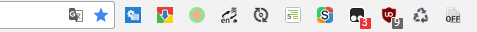
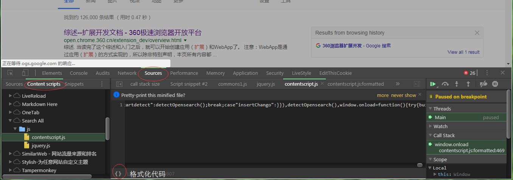

Chrome扩展开发概述
chrome扩展是指一种能够增强浏览器功能的小程序，它由html、css、js和一个描述文件manifest.json组成，在浏览器的地址栏边上显示扩展图标。本文主要简述扩展的组成部分、某些部分的细节、调试方法等

chrome扩展结构是由内容脚本(content script)、弹出页(popup)、选项页(option)、后台脚本页(background)组成。除了内容脚本只是嵌入到网页中的脚本外，后台脚本页可以是含script标签的html也可以仅仅只是js脚本。弹出页、选项页与普通的网页几乎无二，只是可以使用chrome扩展特有的API罢了。了解一个扩展的结构，应该要先读manifest.json文件。

manifest
典型的manifest文件如下:
1 | { |
内容脚本(content scripts)
内容脚本是嵌入到匹配的网页中的脚本，但是又与页面中的脚本隔离开。虽然可以操纵页面上的DOM元素，但却不能够使用页面脚本的API。也就是运行环境与页面的脚本是隔离开的。
不能够使用除了以下的chrome扩展API：
1 | extension ( getURL , inIncognitoContext , lastError , onRequest , sendRequest ) |
除了可以在manifest中配置需要注入的页面以外，还可以动态的注入到页面中
1 | //直接注入代码 |
需要的权限:
1 | "permissions": [ |
事件页(Event Page)
事件页就是后台脚本页，相比于后台脚本页它并不常驻后台，在不需要的时候就会被卸载。开发文档中建议使用事件页来代替后台脚本页，以减少资源的开销。
配置
1 | "background": { |
加载与卸载
加载:
- app或扩展第一次安装或更新
- 事件页监听一个事件，这个事件被发送时
- 内容脚本或其他扩展发送一个消息时
- 其他视图（如：弹出页）调用
runtime.getBackgroundPage时
直到所有的视图页和消息端口被关闭前，事件页不会被卸载。打开视图页不会使得事件页被加载，只能防止事件页被卸载。
原文:the event page will not unload until all visible views (for example, popup windows) are closed and all message ports are closed. Note that opening a view does not cause the event page to load, but only prevents it from closing once loaded.
因为监听器只存在与事件页的上下文中，所以每次加载事件页时都应该重新设置监听器addListener，仅仅在插件安装时runtime.onInstalled设置是不够的
原文:Because the listeners themselves only exist in the context of the event page, you must use addListener each time the event page loads; only doing so at runtime.onInstalled by itself is insufficient
调试
前提：调试扩展需要在扩展管理页(chrome://extensions)开启开发者模式
调试弹出页(popup),右击扩展图标->审查弹出内容即可弹出开发者面板，这个面板与网页调试面板一模一样，操作方式也是相同的。值得一提的是第一次弹出面板，会错过弹出页，初始化的脚本，可以通过在对应的面板上按F5然它重新加载进入断点
调试选项页(option),右击扩展图标->选项,在选项页按F12打开调试面板
调试后台页(background),点击检查视图后的超链接，就会弹出后台页相关的调试面板。
调试内容脚本(content script)，在内容脚本注入的网页打开开发者面板->source->Content scripts(左侧面板)

值得一提的是，在格式化的代码上添加断点，按F5重新加载后能保留格式化并且能够进入断点。
如果加载了没有经过打包的扩展程序，每一次打开chrome浏览器chrome都会提示停用扩展，按照官方的说法是设置注册表后可以解决这个问题，但是我在注册表中没有找到对应的项。如果是windows用户的话可以下载这个批处理脚本运行后也能解决问题:解决扩展警告批处理脚本
常用的JS API
所有的Chrome API都是以chrome对象开头，如：chrome.alarms
- bookmarks 操纵书签的API
- browserAction 获取扩展图标、标题、文字、弹出页等
- browsingData 控制浏览器的浏览数据，从本地文件
- commands 给扩展添加快捷键
- contextMenus 添加选项到右键弹出菜单
- cookies 控制cookies
- desktopCapture 捕获屏幕、个人窗口或标签内容
- downloads 下载控制
- events 事件相关API
- extension 获取扩展的各部分，也能与各部分交换信息
- extensionTypes 扩展的类型声明
- gcm 启用google云消息服务，收发消息
- history 历史记录控制
- i18n 多语言国际化支持
- idle 取得机器闲置状态
- management 管理扩展与应用
- notifications 通知控制
- pageAction 具体的页面下控制扩展图标、标题、文字、弹出页等相关内容
- permissions 获取拥有的权限
- power 请求系统常亮
- runtime 获取运行时相关信息，包括后台页、manifest等等
- sessions 查询或恢复浏览会话
- storage 存储相关
- tabs 与标签页交互
- vpnProvider 实现vpn客户端需要使用的东西
- webRequest 拦截、修改、阻塞请求
- windows 创建、修改、重排窗口
最后附上扩展的API地址：
JavaScript APIs